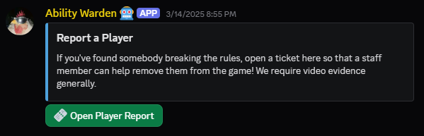

Create Ticket Button
Creates a message with a button attached to it that will create a ticket when clicked. Restricted to staff only, but is not inherently dangerous; the button does the same thing as the /open command.
The title and description that show up in the message embed are hard-coded into the ticket type itself and will be automatically assigned.

Usage
/create-ticket-button <type: Ticket Type>
Parameter Details:
<type: Ticket Type>The type of ticket to create the button/message for.
09 March 2026